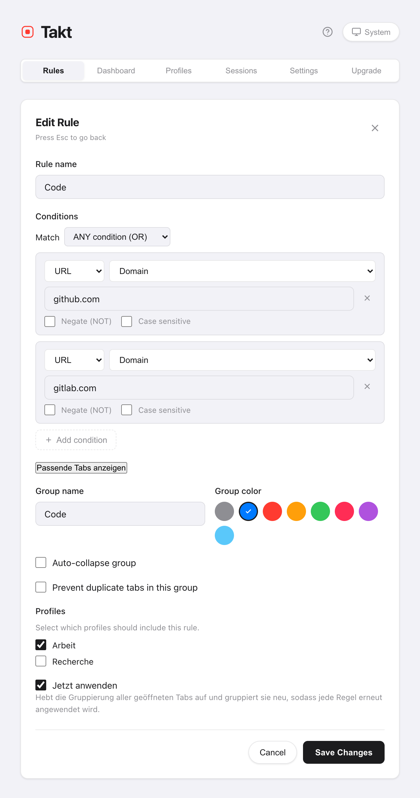

Kurz gesagt: Wenn 5 Regeln oder 5 automatische Gruppen die Websites abdecken, die Sie nutzen, reicht der kostenlose Plan.
- Free: 5 Regeln, 5 Kategorie-/KI-Gruppen, 5 hibernierte Tabs, Duplikatverhinderung, automatisches Anhalten, Schnellaktionen.
- Premium: keine Grenzen, erweiterte Regelmuster, Quick Switch, Sitzungen, Profile, Ressourcen-Dashboard, Backup und Synchronisierung.
- Beide Pläne: kein Konto, keine Analysen, dieselben 6 Sprachen.
Was enthält jeder Plan?
Jede Zeile unten ist am Quellcode von Takt geprüft, nicht an der Store-Beschreibung.
| Funktion | Free | Premium |
|---|---|---|
| Gruppieren | ||
| Gruppierungsregeln | 5 | Unbegrenzt |
| Übereinstimmungstypen | Enthält, exakt, Domain | + Glob, Regex |
| Abgleich mit dem Seitentitel | Nein | Ja |
| Bedingungen pro Regel | 1 | Bis zu 10, mit UND/ODER |
| Gruppierungsmodi (Regeln, Kategorie, KI, Keine) | Alle 4 | Alle 4 |
| Gruppen aus Kategorie- oder KI-Modus | Bis zu 5 | Unbegrenzt |
| Regelvorschläge in Einblicke | Top 3 sichtbar | Alle |
| KI-Regelvorschläge | Bis zu Ihren freien Regelplätzen | Unbegrenzt |
| Regel per Rechtsklick auf eine Seite erstellen | Nein | Ja |
| Sammelgruppe „Andere“ für nicht zugeordnete Tabs | Nein | Ja |
| Aufräumen | ||
| Gruppieren, Gruppen aufheben, Einklappen, Ausklappen, Duplikate schließen | Ja | Ja |
| Tastaturkürzel Alt+Shift+G / U / C | Ja | Ja |
| Verhinderung doppelter Tabs | Ja | Ja |
| Nach Domain sortieren | Aktuelles Fenster | Alle Fenster |
| Andere Gruppen automatisch einklappen | Gleiches Fenster | + andere Fenster |
| Ganze Gruppe schließen, als Lesezeichen speichern oder verschieben | Nein | Ja |
| Arbeitsspeicher | ||
| Inaktive Tabs automatisch anhalten | Ja | Ja |
| Gleichzeitig hibernierte Tabs | 5 | 200 |
| Automatische Hibernierung (Inaktivität, Tab-Anzahl, Zeitplan-Ende) | Nein | Ja |
| Ressourcen-Dashboard und Speicherbudgets | Nein | Ja |
| Tabs finden und behalten | ||
| Offene Tabs im Popup-Bereich Tabs durchsuchen | Ja | Ja |
| Quick Switch (Alt+Shift+Space), inkl. hibernierter Tabs und Verlauf | Nein | Ja |
| Gespeicherte Sitzungen (bis zu 50), automatisches Speichern beim Schließen eines Fensters | Nein | Ja |
| Profile und Zeitpläne | Nein | Ja |
| JSON-Import und -Export | Nein | Ja |
| Dateisynchronisierung und Google-Drive-Synchronisierung | Nein | Ja |
| Überall | ||
| Sprachen, helles/dunkles Design | 6, alle Designs | 6, alle Designs |
| Konto, Analysen | Keine | Keine |
Zwei Hinweise zu den kostenlosen Grenzen. Die Grenze von 5 Regeln schließt die 2 Startregeln ein, die Takt bei der Installation anlegt; löschen Sie sie, wenn Sie sie nicht nutzen. Die Grenze von 5 Gruppen im Kategorie- und KI-Modus zählt jede in Chrome geöffnete Tab-Gruppe mit, auch solche, die Sie von Hand angelegt haben.
Was kostet Takt Premium?
$3 pro Monat oder $30 pro Jahr. Mit dem Jahresplan sparen Sie rund 17 %. Upgraden Sie auf der Optionsseite im Tab Upgrade. Zahlung und Planprüfung laufen über ExtensionPay. Um Premium auf einem anderen Computer zu nutzen, klicken Sie dort im selben Tab auf Bereits bezahlt? Anmelden, um Ihr Abonnement wiederherzustellen.
Brauche ich Premium?
Viele nicht. Bleiben Sie bei Free, wenn:
- Sie sich auf einer Handvoll Websites bewegen. Fünf Domain-Regeln decken viel ab: Code, Doku, Mail, lokale Entwicklung, Videos.
- Sie lieber keine Regeln schreiben. Der Kategoriemodus gruppiert nach Art der Website, und 5 Gruppen reichen oft.
- Ihr Problem Duplikate oder Arbeitsspeicher sind. Duplikatverhinderung und automatisches Anhalten sind kostenlos.
Premium lohnt sich, wenn:
- Sie mehr als 5 Gruppen brauchen oder Muster wie „jeder Pull Request“ (Glob oder Regex).
- Sie den ganzen Tag Tabs per Tastatur suchen. Dafür gibt es Quick Switch.
- Sie zwischen Projekten wechseln und einen Arbeitsbereich speichern und zurückholen möchten. Dafür gibt es Sitzungen.
- Sie Regeln für Arbeit und Zuhause trennen oder mehr als einen Computer nutzen. Dafür gibt es Profile und Synchronisierung.

Was passiert, wenn ein Premium-Abonnement endet?
Takt prüft Ihren Plan beim Start und alle 15 Minuten. Sobald das Abonnement beendet ist, gelten wieder die kostenlosen Grenzen. Takt löscht nichts:
- Regeln bleiben alle erhalten, aber nur die ersten 5 Ihrer Liste bleiben aktiv. Davon gruppieren Regeln mit einer einzigen Bedingung vom Typ enthält, exakt oder Domain weiter; Regeln mit mehreren Bedingungen, einer Titelbedingung oder einem Glob- oder Regex-Muster greifen nicht mehr. Regeln nach der fünften pausieren. Solange Sie 5 oder mehr Regeln haben, können Sie keine neue hinzufügen.
- Hibernierte Tabs bleiben, und Sie können sie aufwecken. Neue können Sie hibernieren, sobald Sie unter 5 liegen.
- Sitzungen bleiben gespeichert, aber Speichern und Wiederherstellen erfordern wieder Premium.
- Profile werden nicht mehr angewendet. Alle Ihre Regeln arbeiten zusammen, als wäre kein Profil aktiv.
- Kategorie- und KI-Modus fallen auf 5 Gruppen zurück.
Abonnieren Sie erneut, und alles funktioniert wie vorher.
Was Premium nicht ändert
- Der Datenschutz ist in beiden Plänen gleich. Kein Konto, keine Analysen. Die Planprüfung geht an ExtensionPay; siehe was Takt mit Ihren Daten macht.
- Die Synchronisierung funktioniert in beiden Plänen. Ihre Regeln und Einstellungen werden in beiden Plänen über die Chrome-Synchronisierung zwischen Ihren Computern abgeglichen; im kostenlosen Plan sind das Ihre 5 Regeln.
- Chromes eigene Werkzeuge gibt es weiterhin. „Memory Saver“ und die Synchronisierung von Tab-Gruppen sind kostenlos und eingebaut. Wenn sie Ihnen reichen, brauchen Sie Takt vielleicht gar nicht.
Kostenlos starten. Nur upgraden, wenn Sie an eine Grenze stoßen.
Zu Chrome hinzufügen — kostenlosHäufige Fragen
Ist Takt kostenlos?
Ja, ohne zeitliche Begrenzung. Der kostenlose Plan umfasst 5 Regeln, Gruppierung nach Kategorie und per KI mit bis zu 5 Gruppen, Duplikatverhinderung, automatisches Anhalten, manuelle Hibernierung von bis zu 5 Tabs sowie die Schnellaktionen und Tastaturkürzel.
Was kostet Takt Premium?
$3 pro Monat oder $30 pro Jahr. Der Jahresplan ist rund 17 % günstiger.
Verliere ich meine Regeln, wenn ich nicht mehr zahle?
Nein. Takt löscht nichts. Die ersten 5 Regeln Ihrer Liste funktionieren weiter, wenn sie eine einzige Bedingung vom Typ enthält, exakt oder Domain nutzen. Alle anderen pausieren, bis Sie erneut abonnieren.
Sind Import und Export kostenlos?
Nein. JSON-Import und -Export, Dateisynchronisierung und Google-Drive-Synchronisierung sind Premium. Siehe Ihre Einrichtung sichern und synchronisieren.